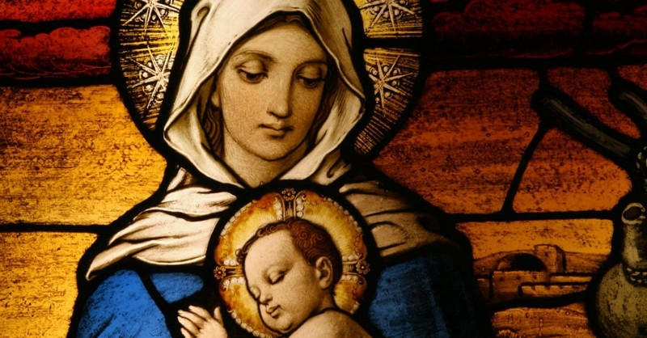
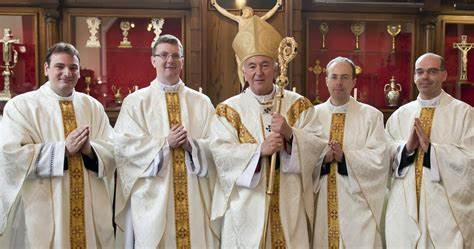
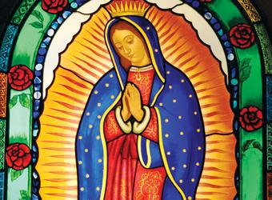

Mary was a first-century Jewish woman of Nazareth, the wife of Joseph, and the mother of Jesus. The New Testament of the Bible as well as the Quran, the Book of Mormon, and the Kitáb-i-Aqdas, describe Mary as a virgin. According to Christian theology, Mary conceived Jesus through the Holy Spirit while still a virgin, and accompanied Joseph to Bethlehem, where Jesus was born.
Mary has been venerated since early Christianity, and is considered by millions to be the holiest and greatest saint because of her extraordinary virtues as seen at the Annunciation by the archangel Gabriel. She is said to have miraculously appeared to believers many times over the centuries. The Eastern and Oriental Orthodox, Catholic, Anglican, and Lutheran churches believe that Mary, as mother of Jesus, is the Theotokos (Mother of God; Θεοτόκος). There is significant diversity in the Marian beliefs and devotional practices of major Christian traditions. The Catholic Church holds distinctive Marian dogmas, namely her status as the Mother of God, her Immaculate Conception, her perpetual virginity, and her Assumption into heaven. Many Protestants minimize Mary's role within Christianity, basing their argument on the alleged lack of biblical support for any beliefs other than the virgin birth.
Mary also has the highest position in Islam among all women. She is mentioned in the Quran more often than in the Bible, where two of the longer chapters of the Quran are named after her and her family.
According to Catholic and Eastern Christian teachings, at the end of her earthly life, God raised Mary's body into heaven; this is known in the Christian West as the Assumption of Mary, and in the East as the Dormition of the Mother of God.

Why is mother mary so important to catholics?
The official Catholic doctrine about Mary is called Mariology. The important roles about her include Mother of God Mary gave birth to the Son of God, so even though she is a human, she cannot create God, but she gave birth to Jesus. He is God, which makes her the mother of God.

How can this belief help guide you as a 12-13 year old in your everyday life
This can help guide us in our everyday life by thinking god was also a human and both mary and jesus have made mistakes but that haven't stopped them from reaching their goal so you should also not give up on your goal when you made a mistake

What is so important about this image?
This image is a piece of art made by a school in california which was inspired by the great mother mary who gave birth to the son of god